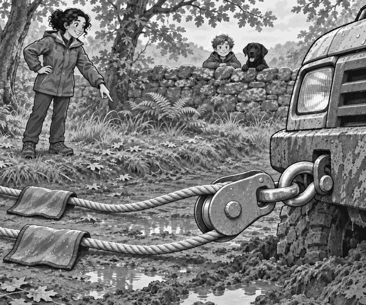

Rain had washed mud across Foxglove Track.
A ranger's green 4x4 slid into a deep ditch.
Its left wheels sank into soft clay.
The right wheels hung near the road.
The ranger climbed out safely.
Then she called Mia's recovery truck.
Tom and Scout rode with Mia.
They stopped well back from the ditch.
Mia walked around the stuck 4x4.
Nothing was broken.
But a straight pull would drag it deeper into the mud.
“We need to pull it towards the road,” said Mia.
Mia parked the recovery truck on firm stones.
She placed strong chocks behind its wheels.
Then she clipped a pulley block to the stuck 4x4.
A pulley is a wheel with a groove for a rope.
Mia unrolled the recovery truck's winch rope.
She ran it through the pulley.
Then she brought the hook back to a strong point on her own truck.
Two parts of the rope now ran between the trucks.
Two parts of the rope shared the pull.
This made the pull slower but stronger.
Tom placed a heavy rope blanket over each side.
The blankets were called dampers.
Everyone moved far away from the tight rope.
Scout waited beside Tom behind a stone wall.
Mia used the winch control from a safe place.
Whirr. Click. Whirr.
The winch wound the rope in.
Both parts of the rope pulled together.
At first, the stuck 4x4 did not move.
Mud held its tyres like glue.
Then one wheel turned.
The green 4x4 rose by one small bump.
Slurp!
Its left wheels climbed out of the deepest clay.
The pulley guided it towards the road.
Mia stopped the winch.
She checked the pulley, hook and wheel chocks.
Everything was still firm.
“One more slow pull,” she said.
Whirr. Click. Whirr.
The 4x4 slid onto solid stones.
All four wheels were back on the track.
The ranger cheered.
Tom unclipped the dampers after the rope went loose.
Mia washed the clay from the pulley.
Scout inspected the empty ditch.
He decided it was much too muddy for paws.
Pulley fact: A double winch line shares the work between two parts of the rope. It gives a slower, stronger pull.
Safety fact: People must stand well away from a tight recovery rope. A heavy damper helps hold the rope down if something fails.
The ranger drove carefully down the centre of the track.
Behind her, Mia packed away the clever little pulley.
One wheel had helped two trucks do the job.